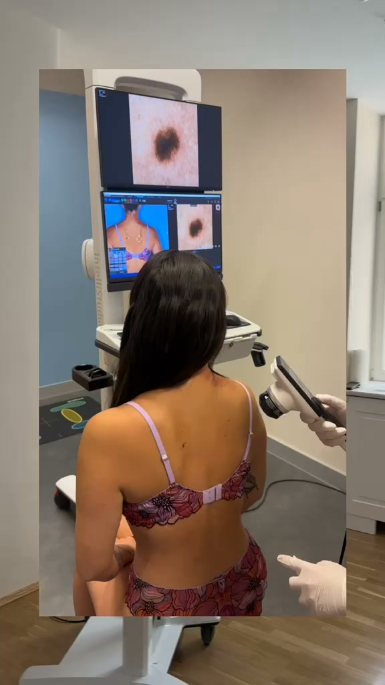
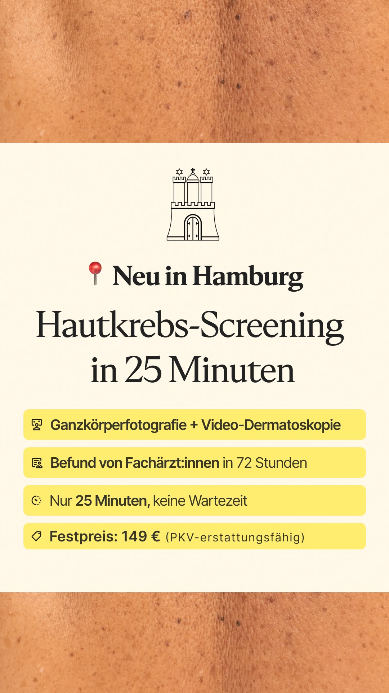
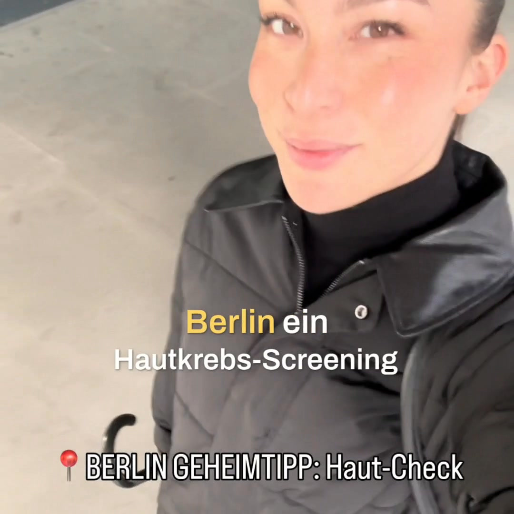
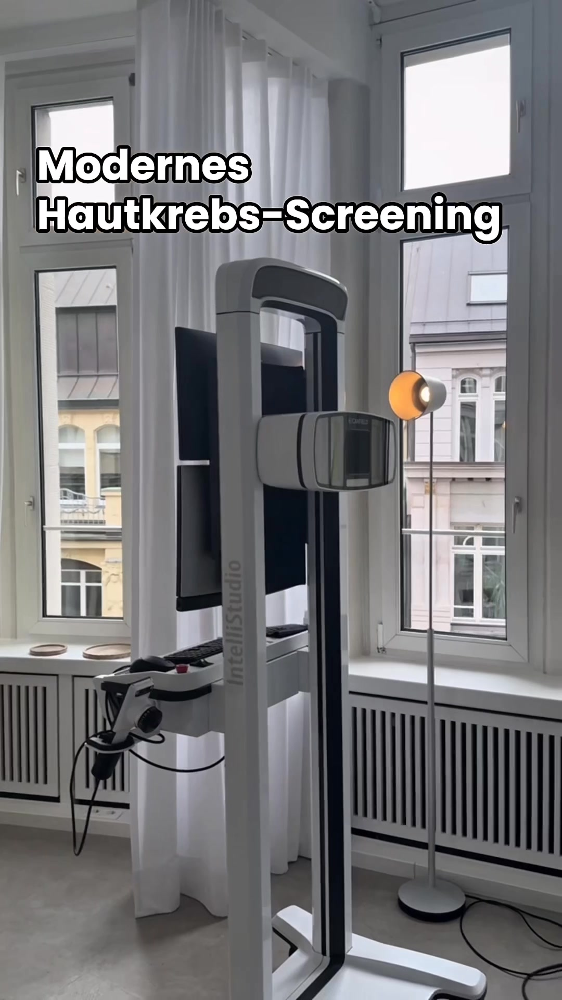
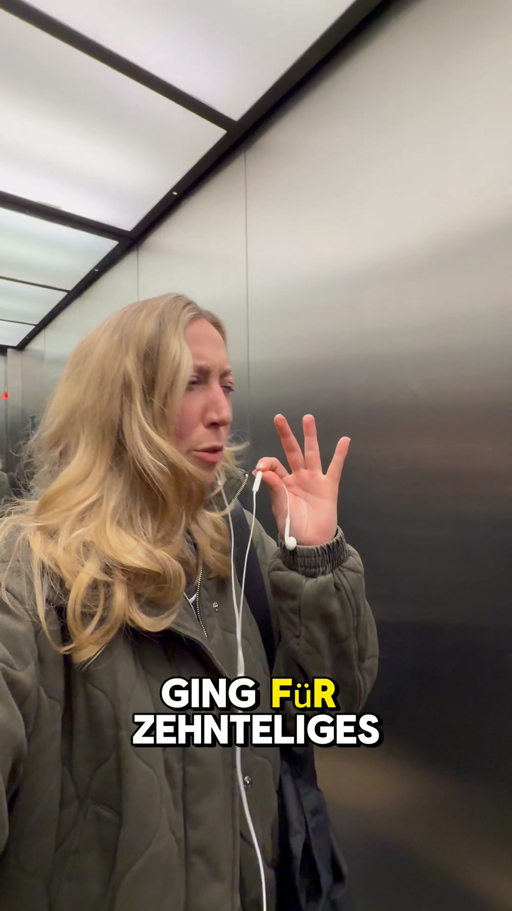
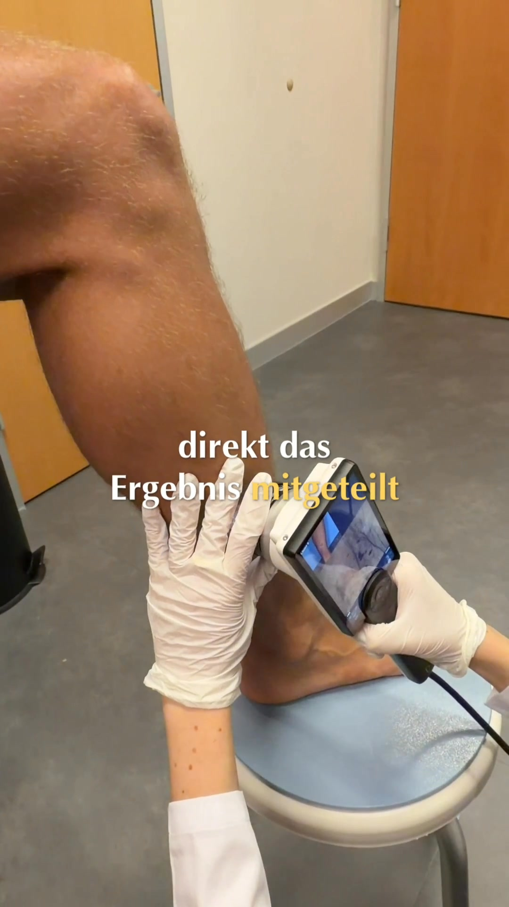
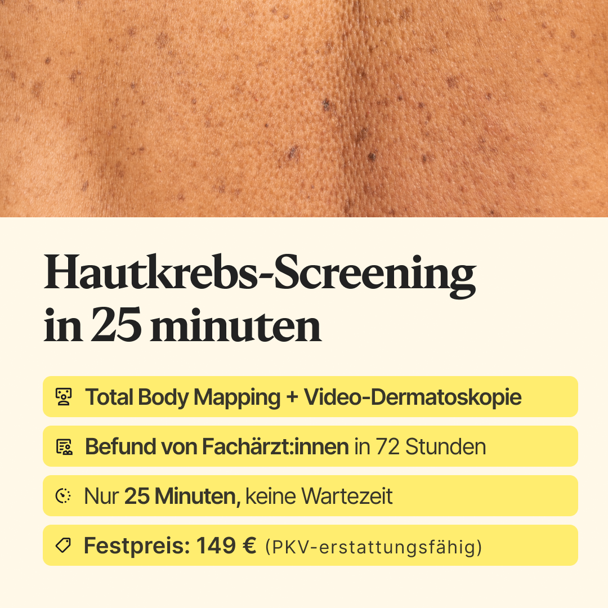

Curavie · Content-Update
Wo die Termine herkommen.
Ein Überblick über alle Kanäle: was läuft, was es kostet, und wo Social dabei steht. Zahlen aus dem Portal, Stand 21. Juli 2026.
21. Juli 2026 · Für das Social- und Content-Team
Was gerade live ist
Fünf Google-Kampagnen über drei Standorte, Meta nur in Hamburg und München. München ist im Juli neu dazugekommen.
| Kanal | Standorte | Status |
|---|---|---|
| Google Search | Berlin, Hamburg, München | Läuft. Hauptkanal. |
| Google PMax | Berlin, Hamburg | Läuft. Günstigster Kanal im Konto. |
| Meta Ads | Hamburg, München | Berlin pausiert, siehe eigene Folie. |
| Instagram & TikTok | alle | Läuft. Kostet Barter und Influencer-Budget. |
| Doctolib | alle | Läuft. Größte Einzelquelle. |
Was ein Termin kostet
Alle Kanäle seit Kampagnenstart, mit Doctolib-Korrektur. Marge je Screening: rund 50 €.
| Kanal | Media-Kosten | Termine getrackt | Effektive Termine | Effektive Kosten |
|---|---|---|---|---|
| DoctolibMarktplatz | keine | 561 in 30 Tagen | - | 0 € |
| Google AdsSearch + PMax | 20.324 € | 408 | 1.094 | 19 € |
| Instagram & TikTokInfluencer und Barter | 5.069 € | 74 | 151 | 34 € |
| Meta AdsHH + MUC live | 5.790 € | 62 | 151 | 38 € |
Je Standort sieht das sehr unterschiedlich aus
Berlin trägt, Hamburg ist teuer
Seit Kampagnenstart, gleiche Doctolib-Korrektur wie bei Meta. Pixel-Conv. sind Browser-Signale, Termine die echten Buchungen.
| Kampagne | Ausgaben | Pixel-Conv. | Termine | Kosten/Termin | % Doctolib | Effektive Termine | Effektive Kosten |
|---|---|---|---|---|---|---|---|
| PMax Berlin | 5.960 € | 1.624 | 158 | 38 € | 64 % | 439 | 14 € |
| Search Berlininkl. CTA-Test | 6.356 € | 1.216 | 176 | 36 € | 64 % | 489 | 13 € |
| Search Hamburg | 5.048 € | 673 | 60 | 84 € | 55 % | 133 | 38 € |
| Search Münchenseit 9. Juli | 496 € | 53 | 5 | 99 € | 50 % | 10 | 50 € |
| Search Muttermal | 1.212 € | 77 | 6 | 202 € | 64 % | 17 | 73 € |
| PMax Hamburg | 1.251 € | 209 | 3 | 417 € | 55 % | 7 | 188 € |
| Gesamt | 20.324 € | 3.852 | 408 | 50 € | 1.094 | 19 € |
SEO ist der kritische Punkt
Der einzige Bereich in diesem Update, der klar hinterherhängt. Das ist kein Performance-Problem, sondern ein Kapazitätsproblem.
Hautkrebsvorsorge-Content
Der Content zum Kernprodukt kommt seit Monaten nicht voran. Das ist genau der Bereich, in dem wir organisch sichtbar sein müssten.
Herz & Prostata
Die Inhalte zu den neuen Vorsorgebereichen sind angelaufen. Wichtig, weil Curavie eine Präventionsmarke ist und nicht nur Haut.
Drei Standorte, drei verschiedene Bilder
Zahlen seit Kampagnenstart. Live sind aktuell nur Hamburg und München. Die Spalte Doctolib-Anteil korrigiert den Preis: ein großer Teil der Termine wird über Doctolib gebucht und taucht in der Meta-Zuordnung nicht auf.
| Kampagne | Ausgaben | Termine | Kosten/Termin | % Doctolib | Effektive Termine | Effektive Kosten |
|---|---|---|---|---|---|---|
| BerlinAktuell pausiert, Google Berlin ist stark genug | 3.611 € | 27 | 134 € | 64 % | 75 | 48 € |
| HamburgLive, auf und ab, keine konstante Performance | 1.827 € | 26 | 70 € | 55 % | 58 | 32 € |
| MünchenLive auf 80 €/Tag, stärkster Start bisher | 352 € | 9 | 39 € | 50 % | 18 | 20 € |
Was auf Meta funktioniert
April bis Juli, sortiert nach Kosten je Buchung. Buchungen sind Schätzungen, anteilig je Kampagne verteilt.

Strong UGC-Tour Titus München · Video 20s
Strong Splitscreen 25 Min. Hamburg · Static
Strong UGC-Tour Kaly Berlin · Video 15s
Mid Doctor-Tour Derma Hamburg · Video 19s
Weak UGC-Story heynadus Berlin · Video 26s
Weak UGC-Story Lukas Berlin · Video 20s
Weak Splitscreen Yellow ** Berlin · StaticDoctolib ist der wichtigste Kanal
Zwei von drei Terminen laufen über Doctolib. Das ist mit Abstand die größte einzelne Buchungsquelle und kostet kein Werbebudget.
Warum das wichtig ist
Das Profil, die Bewertungen und die Verfügbarkeiten auf Doctolib sind faktisch unser wichtigstes Schaufenster. Sie verdienen dieselbe Pflege wie ein Social-Kanal.
Der Haken
Doctolib-Buchungen kommen ohne Quelle an. Wir wissen nicht, wer davon vorher einen Instagram-Post oder eine Anzeige gesehen hat. Social wirkt hier also mehr, als die Zahlen zeigen.
Themen zum Nachdenken
Keine Entscheidungen, sondern die Punkte, die wir gemeinsam durchgehen sollten.
- Brand: Hypothese, dass wir sehr fancy wirken für die Breite der Zielgruppe
- Organic Reach analysieren
- Videos bisher
- Posting-Frequenz, mehr ausprobieren
- Formate für Ads
- Mehr Kooperationen
Social ist nicht gratis, aber günstig
33 Kooperationen seit März, rund 2,2 Mio. Reichweite. Doctolib-Anteil konservativ mit 50 % angesetzt.
Barter trägt das Ergebnis
Kooperationen gegen ein Screening im Wert von 80 € kosten 22 € je Termin, also auf dem Niveau der besten Google-Kampagnen.
Der große Push war teuer
Der Post am 16. Juli wirkte sofort: 10 Buchungen am selben Tag, 16 in vier Tagen. Parallel stiegen die Direktbuchungen in Hamburg von 0,6 auf 1,6 pro Tag.